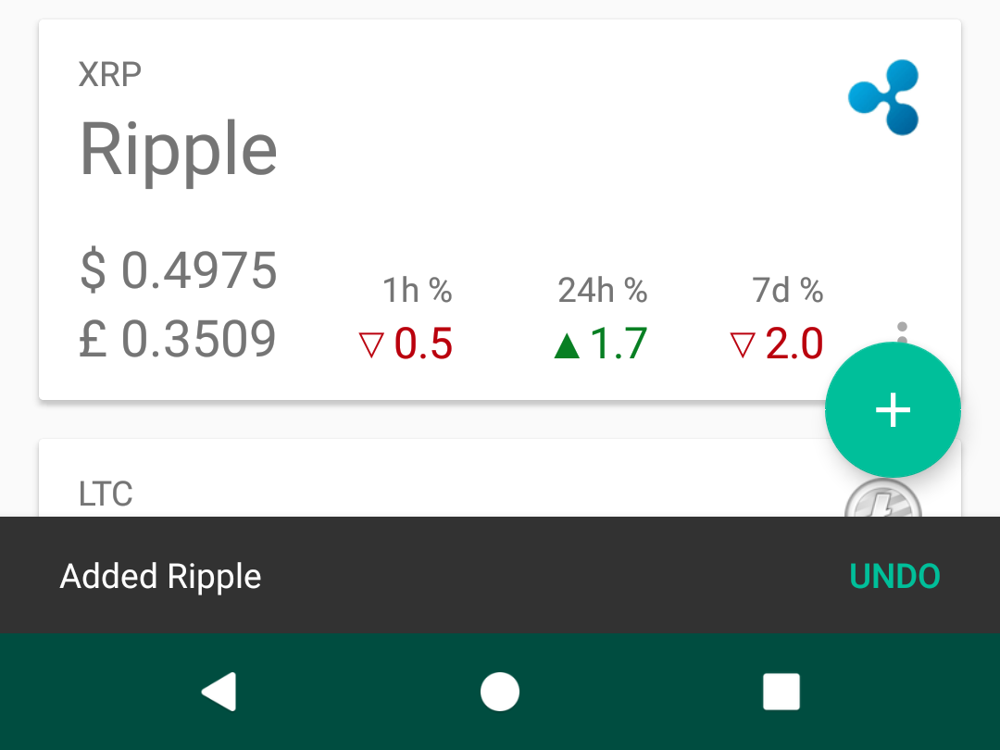

Coins
On opening the app, one is shown a list of coins that has been added by the user, with brief information about each coin: the common name of the coin, its symbol and logo, and the latest price information.
The current market value for 1 coin is shown on the left, in USD on the USD trading market, and this USD value converted to GBP at the current exchange rate.
Value over time is also presented for each coin, with the change in value for the past hour, day and week shown for each coin.
Add a coin
While viewing the coins added in the app, you can add a new coin by tapping the + button in the bottom-right on mobile and top-right on tablet.
A list of available coins (coins which are not already in the list) is shown. Choose a coin from the list to add it to the saved coins. A message is shown if all the coins have been added and there are no others available.
On adding a coin, a message is shown at the bottom of the screen and the list of coins is scrolled to the newly added coin. Tap Undo to remove the coin.
Remove a coin
Remove a coin from the list by tapping the ⋮ button in the lower-right of a coin card, then tapping Delete.
Coin price graph
Tap on a coin card to view more details about a coin.
At the top of the details is a graph showing the historical price for the coin. Initially, this shows the last 28 days history of the coin value in USD.
Swipe left and right on the graph to scroll the time period earlier and later. The vertical price axis automatically adjusts to keep the maximum and minimum values within the visible time period at the top and bottom of the graph.
Tap on the graph at a point to display the value at the point which was tapped. The closest date and time to your tapped location is selected, and the exact price at this point is displayed with the date and time in the lower-right of the graph. Axis are drawn on the graph at the tapped value which extend horizontally, and these are preserved as the graph is swiped left and right, which allows for easy comparison of prices across a greater time range.
Pinch on the graph to change the date range shown on the graph. Pinch in and out to decrease or increase the visible date range shown, up to a maximum of 1 year visible at a time.
Rotate the device to landscape to view the graph full screen.
Coin detail
Below the graph is more information about a coin.
Scroll down to access this information. On mobile, this begins with a small card with the recent price information and deltas which was shown on the coin list. On tablet, this is not shown here since the coin card is still visible. The graph hides as the information is scrolled.
Also available is:
- Current market capitalisation in USD, with the change in cap over the last 24h and the rank of the coin amongst all coins based on this market cap. Also shown is the available number of coins and the total supply if the coin has a limited total.
- 24 hour volume of transactions recorded in the blockchain ledger for this coin, with the 24h delta.
- Dominance of the coin against all other cryptocurrencies, including those not tracked by the app.
- A description of the coin from Wikipedia. Tap More to view the full description.
- The coin’s logo which can be copied to the clipboard as a link.
More actions
Additional information and actions which can be taken on a coin are below the information.
An excerpt of the coin description is available, and the full description can be read by tapping More.
The coin logo is shown and this can be copied to the clipboard by tapping the Copy button. A link to the coin logo is copied and can be pasted anywhere or navigated to.
The authoritative website for the coin can be visited by tapping Visit. The domain name is shown next to the link, but the visit link may take you to a specific path if this is more relevant. If Google Chrome is installed on your Android device, the link is opened within Cryptovalise as a custom Chrome tab. If not, a basic web view is opened.
The coin’s whitepaper can be read if available. This is a PDF document which you can download and read by tapping Read Whitepaper. This will be handled by Google Chrome if installed, or another PDF reader app.